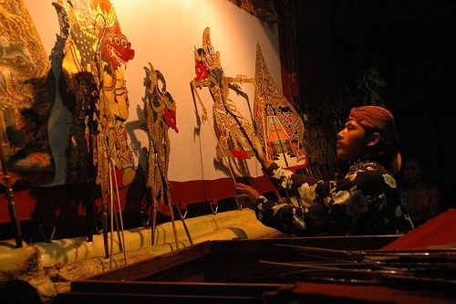
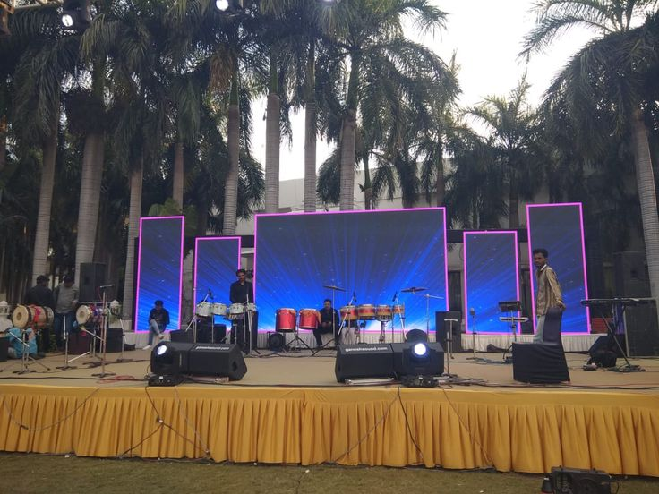
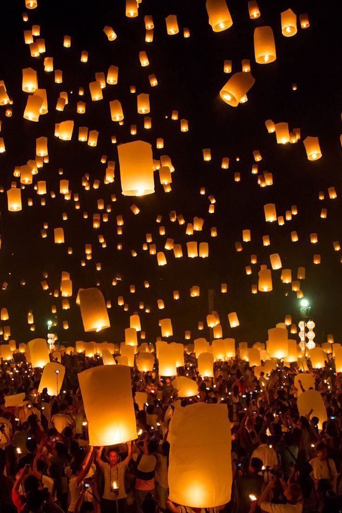
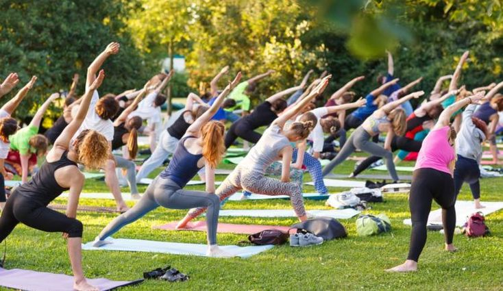

Acara

MAR
22
Festival Kembang Api
Festival Kembang Api di Taman Mas Kemambang hadir sebagai puncak perayaan yang spektakuler.

MEI
13
Pertunjukan Wayang Kulit
Pertunjukan Wayang Kulit akan menghadirkan kisah-kisah epik yang dipimpin oleh dalang berpengalaman.

JUN
05
Lomba Mewarnai Anak
Sebuah kompetisi kreatif yang mengajak anak-anak untuk mengekspresikan imajinasi melalui seni.

SEP
26
Pentas Musik Akustik
Pengunjung bisa menikmati musik santai sembari menikmati suasana taman.

OKT
15
Festival Lampion
Suasana dihiasi cahaya lampion yang menambah keindahan danau, menciptakan magis dan romantis.

NOV
03
Senam Pagi Bersama
Acara masyarakat yang ingin menjaga kesehatan dengan olahraga sambil menikmati udara segar taman.